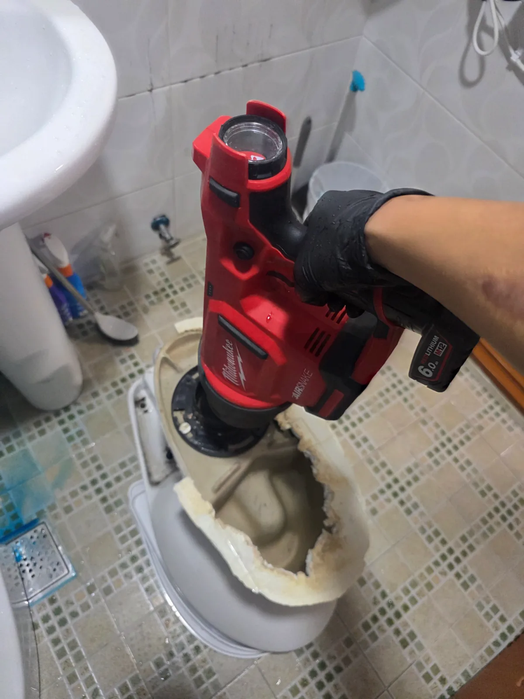
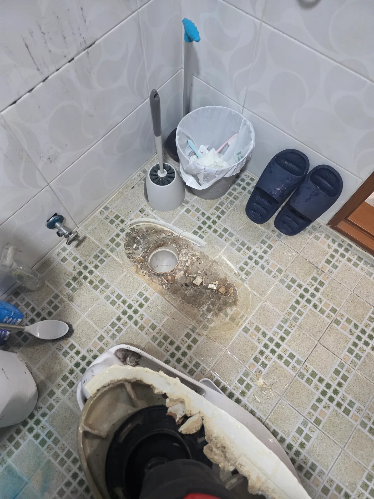

경기도 광주시 송정동 변기막힘, 현장 도착 후 진단
경기도 광주시 송정동에서 변기막힘으로 방문한 현장입니다. 물이 내려가지 않는 증상은 익숙하지만, 안에 무엇이 걸렸는지는 현장마다 다릅니다. 이번에는 휴지 뭉치 속에 막힘을 일으킨 또 다른 원인이 숨어 있었습니다.
저희는 변기를 탈거해 내부 통로에 접근하는 작업을 진행했습니다. 본체를 분리하자 바닥 배관 입구와 변기의 하부 배출구가 드러났습니다. 설치된 상태에서는 가려져 있던 아래쪽에서 제거 작업을 이어갔습니다.
1단계: 증상 확인과 필요한 장비 작업
탈거한 변기의 하부 배출구에 밀워키 AIRSNAKE 에어건을 대고 작업했습니다. 내부에 걸린 물질을 꺼내보니 흰 휴지 뭉치 사이에 길쭉한 갈색 덩어리가 있었습니다. 정체는 실리콘이었습니다.
휴지에 살짝 묻은 정도가 아니었습니다. 실리콘 자체가 덩어리로 남아 있었습니다. 휴지만 생각하고 접근했다면 놓치기 쉬운 부분입니다. 물에 불어 풀어진 휴지와 달리, 실리콘은 형태를 유지한 채 통로에 걸려 있었던 거죠.
회수한 상태로 보아 실리콘을 닦은 휴지가 먼저 걸리고, 이후 내려온 휴지와 변이 함께 머물렀던 것으로 보입니다. 실리콘 표면이 갈색으로 보이는 것도 그 과정에서 오염된 흔적으로 보입니다. 변기에 버릴 때는 휴지 한 뭉치였겠지만, 안에서는 제법 끈질긴 장애물이 된 셈입니다.

2단계: 원인 구간 처리와 정상 작동 확인
막힘을 일으킨 실리콘과 휴지 뭉치를 변기 밖으로 회수했습니다. 덩어리를 직접 꺼내면서 무엇이 배수를 방해했는지 확인할 수 있었습니다.
이후 변기를 제자리에 다시 설치하고 바닥 접합부를 마감했습니다. 이번 작업은 변기 내부 이물질 제거부터 재설치와 하부 마감까지 이어졌습니다.

작업 결과와 재발 방지 안내
송정동 변기막힘의 원인이었던 실리콘 덩어리와 휴지 뭉치를 제거했습니다. 작업 사진에는 탈거 후 에어건을 사용하는 과정과 실제 회수한 이물질이 담겨 있습니다.
실리콘을 닦은 휴지는 변기에 버리지 마세요. 휴지가 물에 풀어진다고 함께 묻은 실리콘까지 풀어지는 것은 아닙니다. 특히 양이 많아 단단한 덩어리로 굳으면 변기의 굴곡진 통로를 빠져나가기 어려워지고, 뒤이어 내려오는 휴지와 변까지 걸려 막힘이 심해질 수 있습니다.
욕실이나 주방에서 실리콘 작업을 했다면 닦아낸 휴지와 남은 잔재물은 별도로 모아 처리해주세요. 적은 양이니 괜찮겠지 하고 물을 내리는 습관을 피하는 것이 좋습니다. 이번처럼 뒤처리할 때 버린 물질 때문에 변기를 들어내는 작업까지 필요해질 수 있습니다.
이물질을 버린 뒤 변기가 막혔다면 반복해서 물을 내리지 말고, 무엇이 들어갔는지 작업자에게 알려주세요. 원인에 대한 정보는 필요한 작업을 판단하는 데 도움이 됩니다. 탈거를 안내받았다면 분리가 필요한 이유와 함께, 안내받은 비용에 이물질 제거와 재설치, 바닥 마감까지 포함되는지 확인하면 비용 오해를 줄일 수 있습니다.
신라건축설비는 경기도 광주시를 비롯한 서울과 경기 지역에서 변기막힘을 전문적으로 해결합니다. 현장 상태에 맞춰 필요한 작업 범위와 비용을 명확히 안내하는 것을 중요하게 생각하며, 배관 문제가 확인되면 보수와 교체공사까지 대응합니다.
최종 조치: 변기를 탈거해 하부 배출구에 접근하고, 에어건 작업으로 휴지와 실리콘 덩어리를 제거했습니다. 이후 변기를 재설치하고 하부를 마감했습니다.
현장 방문 전 확인하는 비용과 작업 범위
신라건축설비는 현장 증상과 배관 구조를 확인한 뒤 필요한 작업과 예상 비용을 안내합니다. 단순 관통으로 해결되는지, 배관내시경·석션·고압세척 또는 변기 탈거가 필요한지는 현장 상태에 따라 달라집니다. 출장비와 야간 작업비, 추가 장비 비용이 발생할 수 있는 경우 작업 전에 먼저 설명하고 동의를 받은 범위에서 진행합니다.
업체를 선택할 때 확인할 사항
무조건적인 ‘0원’ 표현보다 실제 작업 범위, 추가 비용 조건, 사용 장비와 사후 대응 기준을 확인하는 것이 중요합니다. 해결되지 않았을 때의 비용 기준과 작업 후 동일 증상 발생 시 점검 범위를 사전에 문의해두면 불필요한 분쟁을 줄일 수 있습니다.
경기도 광주시 변기막힘 자주 묻는 질문
변기막힘은 왜 반복되나요?
경기도 광주시 송정동 현장처럼 변기가 막혀 물이 원활하게 내려가지 않고 사용에 불편이 발생했습니다. 증상은 원인이 현장마다 다를 수 있습니다. 변기 내부 이물질뿐 아니라 하부 오수관 막힘이나 배관 상태 때문에 반복될 수 있습니다. 같은 변기막힘이 재발하면 막힌 위치와 원인을 다시 확인하는 것이 중요합니다.
변기 물이 안 내려가거나 역류하면 변기뚫는업체를 불러야 하나요?
물이 천천히 내려가거나 수위가 차오르고 변기역류가 반복되면 단순 뚫어뻥보다 전문 장비 점검이 필요한 경우가 있습니다. 현장에서는 증상과 배관 구조를 먼저 확인합니다.
변기 이물질 막힘은 변기를 탈거해야 하나요?
물티슈·청소포·플라스틱·음식물처럼 변기 트랩에 걸린 이물질은 위치에 따라 변기 탈거가 필요할 수 있습니다. 무조건 탈거하지 않고 먼저 막힘 위치를 판단합니다.
변기뚫는업체는 어떤 장비로 작업하나요?
현장 상태에 따라 석션, 에어건, 배관내시경, 변기 탈거 등을 사용합니다. 하부 오수관 문제라면 변기만 뚫는 작업보다 배관 구간 확인이 중요합니다.
변기막힘 비용은 어떻게 정해지나요?
단순 관통인지, 이물질 제거와 변기 탈거가 필요한지, 오수관이나 공용배관 작업이 필요한지에 따라 달라집니다. 추가 장비나 작업이 필요하면 진행 전에 범위와 비용을 안내합니다.
변기에서 냄새가 나거나 물이 자주 차오르는 것도 막힘과 관련 있나요?
악취나 수위 이상이 항상 막힘 때문인 것은 아니지만 배수 불량, 오수관 상태, 연결부 문제와 함께 나타날 수 있습니다. 반복되면 현장 점검으로 원인을 구분해야 합니다.
변기막힘 서울·경기 출동지역
신라건축설비는 경기도 광주시 송정동 현장을 포함해 서울 25개 구와 경기도 31개 시·군의 배관 문제를 상담합니다. 현장 거리와 기사 배정 상황에 따라 출동 가능 여부를 먼저 안내드립니다.
서울 전 지역
강남구 · 강동구 · 강북구 · 강서구 · 관악구 · 광진구 · 구로구 · 금천구 · 노원구 · 도봉구 · 동대문구 · 동작구 · 마포구 · 서대문구 · 서초구 · 성동구 · 성북구 · 송파구 · 양천구 · 영등포구 · 용산구 · 은평구 · 종로구 · 중구 · 중랑구
경기도 주요 출동지역
수원시 · 용인시 · 고양시 · 화성시 · 성남시 · 부천시 · 남양주시 · 안산시 · 평택시 · 안양시 · 시흥시 · 파주시 · 김포시 · 의정부시 · 광주시 · 하남시 · 광명시 · 군포시 · 양주시 · 오산시 · 이천시 · 안성시 · 구리시 · 의왕시 · 포천시 · 양평군 · 여주시 · 동두천시 · 과천시 · 가평군 · 연천군